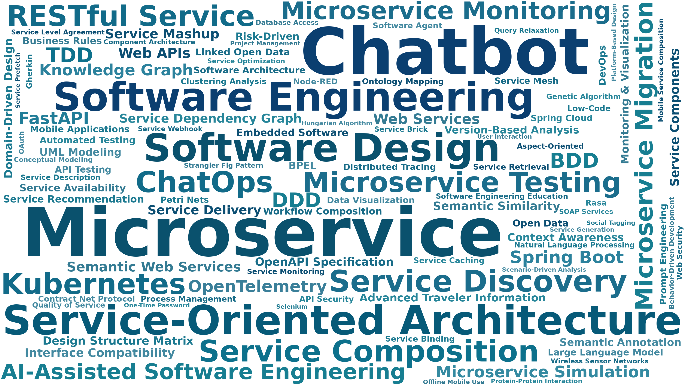
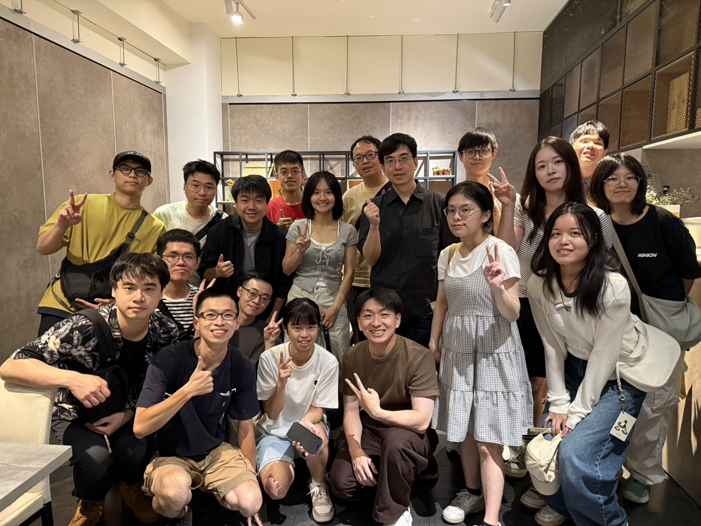
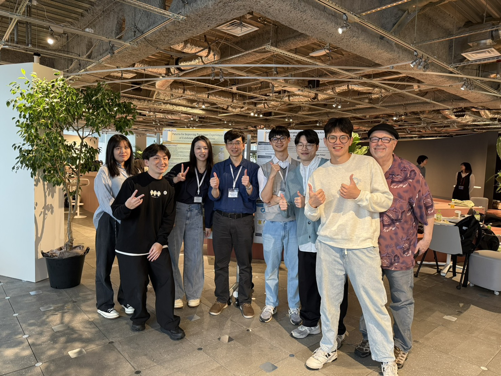
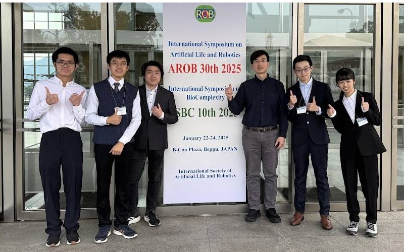

Microservice Monitoring & Observability
Microservice Monitoring & Observability
Our laboratory focuses on the practical advancement of software engineering, with research on Service-Oriented Architecture and Service Computing technologies and applications.
Our research spans Web service discovery, composition, and availability, and extends to microservice migration, testing, monitoring, chatbots, and generative-AI-assisted software engineering.
Microservice Monitoring & Observability
Microservice Testing
Software Architecture Migration
Chatbot Application Architecture
AI-Augmented DevOps
Web Service Discovery & Recommendation
Service Composition & Mashup
Open Data & Semantic Web
Healthcare Interoperability & FHIR

Our research covers microservice architecture, Kubernetes, service testing, ChatOps, Web APIs, open data, and intelligent software engineering, with outcomes realized through publications, system prototypes, and student projects.


